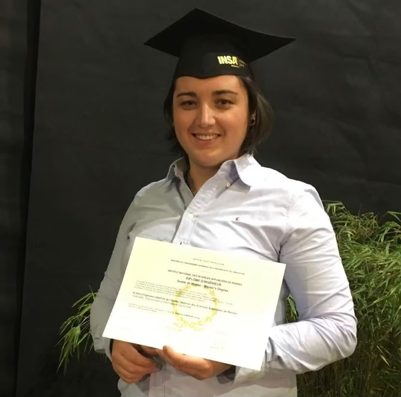

Ma formation
Détails de ma formation
Ecoles
Autoformations Numériques sur Internet
Site Openclassroom
- Créez votre site web avec HTML5 et CSS3 : Maitriser les bases, mettre en forme des pages Web, agencer le contenu, utiliser des fonctionnalités avancées.
- Initiez-vous au Deep Learning : Expliquer les principes de base d'un réseaux de neurones artificiels, mettre en place un modèle de Deep Learning, adapter les paramètres d'un modèle afin de l'améliorer.
- Développez avec les agents IA à l'ère du vibe coding : Collaborez avec l'IA pour coder plus efficacement, tout en comprenant ses limites et l’importance de maîtriser les fondamentaux (langages, logique, frameworks).
Cycle Ingénieur, Electronique et Informatique Industrielle, obtenu
INSA (Institut National des Sciences Appliquées), Rennes
- L’ingénieur EII est un expert dans la conception et la réalisation de systèmes électroniques complexes, ainsi que dans le développement de logiciels associés.
Licence Professionnelle, Systèmes Electroniques et Informatique Communicants, otbenu
IUT de Nantes, Carquefou
- Ce professionnel participe à la conception, au développement, à la mise en fabrication et à l'installation d'ensembles électroniques et informatiques communicants.
BTS, Systèmes Electroniques, obtenu
Lycée Pierre de Coubertin, Nancy
- Ce professionnel participe à la réalisation ou à la maintenance d’une grande variété de produits qui associent fréquemment l’électronique à d’autres technologies.
Baccalauréat Série S, obtenu
Lycée Arthur Rimbault, Istres
- Option Physique/Chimie Année de Terminale tout en étant CFC de Volley d'Istres.
- Centre de Formation Année de Terminale tout en étant CFC de Volley d'Istres.
- Equipe de France Junior De nombreux stages en équipe nationale ayant nécessité une absence scolaire avant le bac.
Seconde et Première Série S
Lycée Colbert de Torcy, Sablé sur Sarthe
- Pôle Espoir : Années en internat avec entrainement tous les midi et tous les soirs.
